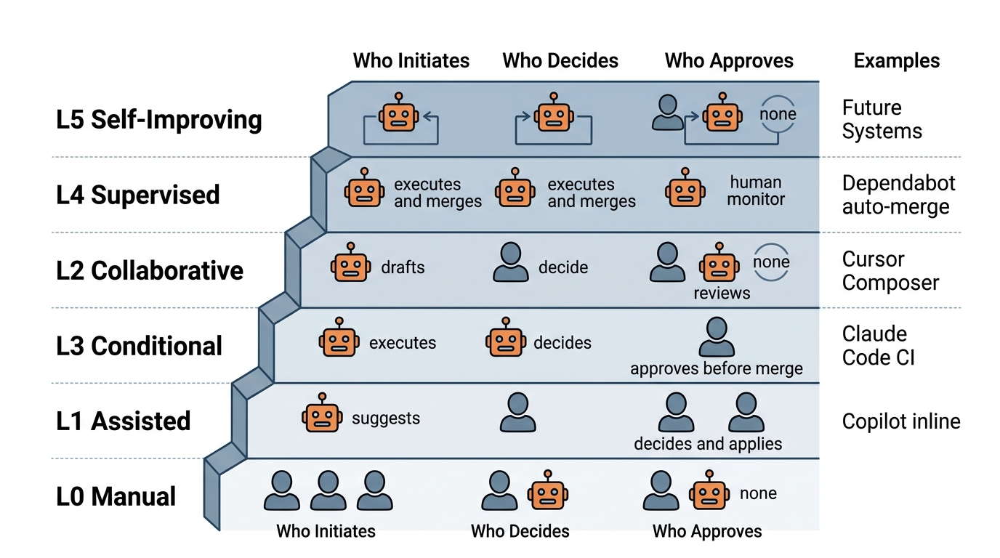

Prerequisites
This section opens the chapter. You should be comfortable with multi-agent workflows from Chapter 17, particularly the agent role definitions and workflow graph patterns. The evaluation methodology from Chapter 23 provides the benchmarking framework referenced here. The agent loop pattern (observe, think, act) from Chapter 10 is the foundation that SWE agents build upon.
A software engineering (SWE) agent is an AI system that can read a codebase, understand a task description, plan a solution, edit files, run tests, and iterate until the task is complete. Unlike code completion tools that suggest the next few tokens, SWE agents operate at the level of entire tasks: "fix this bug," "implement this feature," "refactor this module." This section defines what SWE agents are, maps the spectrum of autonomy from human-driven to fully autonomous, measures what today's agents can and cannot do, and establishes the capability envelope that determines which tasks are safe to delegate. Understanding these capabilities is essential before building the autonomous factory in Section 24.2.
1. From Code Completion to Software Engineering
Picture an engineer who reads a bug report at 9:00 AM, navigates an unfamiliar codebase, pinpoints the faulty function, writes a fix across three files, runs the test suite to confirm, and opens a pull request by 9:04 AM, all without a human touching a keyboard. That scenario is no longer hypothetical: SWE agents routinely close simple issues in minutes, and understanding how they work (and where they fail) is the prerequisite for trusting them with real repositories. A code completion model (Copilot, Codeium, TabNine) predicts the next tokens given a cursor position and surrounding context. It reacts to local context, holds no state, and operates at the granularity of a single edit. An SWE agent, by contrast, maintains a persistent session with the repository. It navigates files, reads documentation, and formulates a plan. It then makes coordinated edits across multiple files, executes commands, observes their output, and revises its approach when something fails.
When a one-shot code suggestion introduces a subtle bug, there is no second chance; the error ships as-is unless a human catches it. The feature that separates agents from completion tools is precisely the mechanism that prevents this scenario.
The key architectural difference is the agent loop. Where a completion model runs a single forward pass and returns, an SWE agent runs the observe-think-act cycle from Chapter 10 repeatedly until a termination condition is met (tests pass, the agent gives up, or a token budget is exhausted). This loop gives the agent the ability to recover from mistakes, a property that single-pass systems fundamentally lack.
The agent loop is precisely the repeated cycle of observe (read files, inspect test output, check error messages), think (decide what to do next given everything seen so far), and act (edit a file, run a command, search the codebase). This loop transforms a one-shot prediction into an iterative problem-solving process. The agent can attempt a fix, discover it was wrong, and try a different approach, all within a single session. In each cycle, the system appends the latest observation to the agent's conversation history and prompts the large language model (LLM) to select the next action conditioned on the full trajectory. Use an agent loop (rather than a single-pass completion) whenever a task requires verification, may need multiple coordinated edits, or depends on runtime feedback such as test results or compiler errors.
We can formalize the distinction. Let \(\mathcal{R}\) denote the repository state (all files, their contents, and metadata), \(\mathcal{I}\) the task instruction (an issue description, a feature request), and \(\mathcal{A}\) the set of available actions (edit file, run command, search codebase, read file). A code completion model computes a single function:
$$f_{\text{complete}}: (\mathcal{R}_{\text{local}}, \text{cursor}) \to \text{tokens}$$where \(\mathcal{R}_{\text{local}}\) is a small window of context around the cursor. An SWE agent, by contrast, computes a trajectory:
$$\tau = (s_0, a_0, s_1, a_1, \ldots, s_T) \quad \text{where } s_t \in \mathcal{S}, \; a_t \in \mathcal{A}$$where \(\mathcal{S} = \mathcal{R} \times \mathcal{I} \times \mathcal{H}\) is the full state space (repository state, instruction, and conversation history \(\mathcal{H}\)), and \(T\) is determined by a termination policy. The agent selects each action by conditioning on the full trajectory so far:
$$a_t = \pi(s_0, a_0, s_1, \ldots, s_t)$$This trajectory formulation connects directly to the search framework from Chapter 1: the SWE agent is searching through the space of possible code modifications for a trajectory that satisfies the task's acceptance criteria. In short: an SWE agent is a search algorithm whose search space is code edits and whose objective function is a passing test suite.
The difference between a code completion tool and an SWE agent is not the underlying model (both may use the same LLM). It is the loop. The ability to execute an action, observe the result, and choose the next action based on what happened gives SWE agents a qualitatively different capability: error recovery. A completion model that generates a buggy function is done. An SWE agent that generates a buggy function can run the tests, see the failure, read the traceback, and fix the bug. This loop is what makes autonomous operation possible.
2. The Autonomy Ladder
Once the agent loop enables error recovery and iterative problem-solving, a natural question follows: how much autonomy should we grant to a system that can now operate on its own?
Not all SWE agent deployments are equally autonomous. Borrowing from the SAE (Society of Automotive Engineers) levels for self-driving vehicles (SAE International, 2021), we define a six-level autonomy ladder for software engineering agents. Each level describes who initiates work, who makes decisions, and who approves the result.
from enum import IntEnum
from dataclasses import dataclass
class AutonomyLevel(IntEnum):
"""The autonomy ladder for SWE agents."""
L0_MANUAL = 0 # No AI assistance
L1_SUGGESTION = 1 # AI suggests, human decides and applies
L2_COPILOT = 2 # AI drafts, human reviews and approves
L3_SUPERVISED = 3 # AI executes, human approves before merge
L4_AUTONOMOUS = 4 # AI executes and merges, human monitors
L5_SELF_IMPROVING = 5 # AI improves its own processes
@dataclass
class AutonomyConfig:
"""Configuration for an autonomous software system."""
level: AutonomyLevel
allowed_file_patterns: list[str] # globs for files agent may edit
blocked_paths: list[str] # paths agent must never touch
max_files_changed: int # per-PR limit
max_lines_changed: int # per-PR limit
require_tests_pass: bool # block merge on test failure
require_human_review: bool # require human approval
require_ci_green: bool # block merge on CI failure
auto_merge_confidence: float # threshold for auto-merge (0-1)
# Example: a conservative L3 configuration
L3_CONFIG = AutonomyConfig(
level=AutonomyLevel.L3_SUPERVISED,
allowed_file_patterns=["src/**/*.py", "tests/**/*.py"],
blocked_paths=[
"*.env", "*.key", "*.pem", # secrets
"migrations/**", # database schemas
"infra/**", "deploy/**", # infrastructure
".github/workflows/**", # CI/CD pipelines
],
max_files_changed=10,
max_lines_changed=500,
require_tests_pass=True,
require_human_review=True,
require_ci_green=True,
auto_merge_confidence=0.0, # never auto-merge at L3
)
The levels map to progressively decreasing human involvement:
L0: Manual. No AI involvement. The human reads the issue, writes the code, runs the tests, and opens the pull request. This is the baseline against which all other levels are measured.
L1: Suggestion. The agent analyzes an issue and suggests a fix, but the human decides whether to apply it. GitHub Copilot's inline suggestions and ChatGPT-style "here's how I would fix it" conversations operate at this level. The agent has no ability to modify the repository directly.
L2: Copilot. The agent drafts a complete solution (a branch with code changes, tests, and a pull request (PR) description), but the human reviews every change before merging. GitHub Copilot Workspace and Cursor's multi-file editing operate here. The agent can write to the repository, but nothing reaches production without explicit human approval.
L3: Supervised. The agent executes the full workflow (triage, plan, implement, test) autonomously, but a human approves before merge. The human's role shifts from "write the code" to "review the agent's work." This is where most production deployments sit today: the agent does the work, but a human gatekeeps the result.
L4: Autonomous. The agent executes and merges without human approval, but humans monitor dashboards and can intervene. The agent is trusted for a defined class of tasks (bug fixes below a complexity threshold, dependency updates, documentation changes). Devin and Factory AI target this level for specific task categories (as of 2025, several competitors including OpenAI Codex, Amazon Q Developer Agent, and Google Jules also operate at L4 for scoped task classes, reflecting rapid commercialization of supervised-autonomous coding).
L5: Self-improving. The agent not only resolves issues but improves its own processes: tuning its triage classifier based on outcomes, updating its system prompts based on review feedback, and expanding its capability envelope as it accumulates evidence of reliable performance. No production system operates at L5 today, but the architecture for it is a natural extension of L4 with feedback loops. Figure 24.1.1 illustrates SWE agent autonomy ladder from L0 to L5.

Common Misconception
A frequent misconception is that higher autonomy levels are inherently better and that teams should aim to reach L4 or L5 as quickly as possible. In practice, the optimal autonomy level depends on the task category, the blast radius (the scope of damage a failed change can cause in production), and the maturity of the agent's capability envelope for that domain. Running a security-critical authentication module at L4 (autonomous merge) when the agent's resolve rate for that task class is 40% would expose production to unacceptable risk. Most organizations benefit from operating different task categories at different levels simultaneously: L4 for dependency bumps, L3 for routine bug fixes, and L1 for architectural changes.
Consider four systems and where they fall: (1) GitHub Copilot (inline suggestions)
is L1; the developer accepts or rejects each suggestion. (2) Cursor Composer
(multi-file edits with a plan) is L2; it drafts changes but the developer reviews the
diff. (3) Claude Code with --allowedTools constraints running in
a CI pipeline that opens PRs for human review is L3; it executes autonomously but a
human merges. (4) Dependabot with auto-merge enabled for patch updates where
continuous integration (CI) passes is L4 for the narrow domain of dependency updates; no human reviews, but
the scope is tightly constrained. No widely deployed system operates at L5 yet.
3. Anatomy of an SWE Agent
Regardless of autonomy level, every SWE agent shares a common architecture with four components: a perception layer that reads the repository and task, a reasoning layer that plans the solution, an action layer that modifies files and runs commands, and a verification layer that checks whether the changes work. Figure 24.1 illustrates how these four layers connect in the agent loop. The following implementation shows the skeleton of a minimal SWE agent using the Claude Code SDK's subprocess API.
import subprocess
import json
from dataclasses import dataclass, field
from pathlib import Path
from typing import Optional
@dataclass
class SWEAgentResult:
"""Structured output from an SWE agent run."""
issue_id: str
success: bool
files_changed: list[str]
tests_passed: int
tests_failed: int
lines_added: int
lines_removed: int
confidence: float # agent's self-assessed confidence (0-1)
reasoning_trace: list[str] # key decision points
error: Optional[str] = None
class ClaudeCodeSWEAgent:
"""
Minimal SWE agent wrapping the Claude Code SDK.
The agent operates in a cloned repository, reads the issue,
implements a fix, runs tests, and reports results.
"""
def __init__(
self,
repo_path: Path,
model: str = "claude-sonnet-4-20250514",
max_turns: int = 30,
allowed_tools: Optional[list[str]] = None,
):
self.repo_path = repo_path
self.model = model
self.max_turns = max_turns
self.allowed_tools = allowed_tools or [
"Read", "Edit", "Write", "Bash",
"Glob", "Grep",
]
def solve_issue(self, issue_title: str, issue_body: str) -> SWEAgentResult:
"""
Attempt to solve a GitHub issue autonomously.
Spawns a Claude Code subprocess with a system prompt
tailored for issue resolution, constrained to the
allowed tool set.
"""
system_prompt = self._build_system_prompt(issue_title, issue_body)
# Invoke Claude Code SDK as a subprocess
cmd = [
"claude", "--print",
"--model", self.model,
"--max-turns", str(self.max_turns),
"--output-format", "json",
"--allowedTools", ",".join(self.allowed_tools),
]
result = subprocess.run(
cmd,
input=system_prompt,
capture_output=True,
text=True,
cwd=str(self.repo_path),
timeout=600, # 10-minute timeout
)
return self._parse_result(result, issue_title)
def _build_system_prompt(self, title: str, body: str) -> str:
return f"""You are an SWE agent. Your task is to resolve this issue.
ISSUE TITLE: {title}
ISSUE BODY: {body}
INSTRUCTIONS:
1. Read the relevant source files to understand the codebase.
2. Identify the root cause of the issue.
3. Implement a fix with minimal, focused changes.
4. Write or update tests that verify the fix.
5. Run the test suite and confirm all tests pass.
6. Summarize what you changed and why.
CONSTRAINTS:
- Do not modify configuration files, CI pipelines, or secrets.
- Keep changes under 500 lines total.
- Every code change must have a corresponding test.
- If you cannot solve the issue with confidence, say so."""
def _parse_result(
self, proc: subprocess.CompletedProcess, issue_title: str
) -> SWEAgentResult:
"""Parse Claude Code output into structured result."""
if proc.returncode != 0:
return SWEAgentResult(
issue_id=issue_title,
success=False,
files_changed=[],
tests_passed=0, tests_failed=0,
lines_added=0, lines_removed=0,
confidence=0.0,
reasoning_trace=[],
error=proc.stderr[:500],
)
# Parse the JSON output from Claude Code
try:
output = json.loads(proc.stdout)
except json.JSONDecodeError:
output = {"result": proc.stdout}
# Collect git diff stats
diff_stat = subprocess.run(
["git", "diff", "--stat", "--numstat"],
capture_output=True, text=True,
cwd=str(self.repo_path),
)
files, added, removed = self._parse_diff_stat(diff_stat.stdout)
return SWEAgentResult(
issue_id=issue_title,
success=True,
files_changed=files,
tests_passed=0, # populated by verification layer
tests_failed=0,
lines_added=added,
lines_removed=removed,
confidence=0.8, # placeholder; refined by verifier
reasoning_trace=[str(output.get("result", ""))],
)
@staticmethod
def _parse_diff_stat(stat_output: str) -> tuple[list[str], int, int]:
"""Parse git diff --numstat output."""
files, total_added, total_removed = [], 0, 0
for line in stat_output.strip().split("\n"):
if not line:
continue
parts = line.split("\t")
if len(parts) == 3:
added, removed, filename = parts
try:
total_added += int(added)
total_removed += int(removed)
except ValueError:
pass # binary files show '-'
files.append(filename)
return files, total_added, total_removed
Three design choices matter. First, the agent runs in a cloned repository,
not in production; only verified changes reach the main branch. Second, the
allowed_tools parameter restricts the agent to reading, editing, writing,
and running tests, blocking network requests, package installs, and access to
resources outside the repository. Third, the timeout parameter caps
execution time, preventing runaway agents from burning tokens indefinitely.
The from-scratch implementation above is roughly 120 lines. The SWE-agent framework from Princeton NLP provides the same capability in about 10 lines of configuration, plus a rich set of agent-computer interface (ACI) commands, trajectory logging, and SWE-bench (a standardized benchmark of real GitHub issues used to measure SWE agent performance; see Section 5 below) integration. The framework handles file navigation, context windowing, and error recovery internally:
# Using the SWE-agent framework (10 lines vs 120)
from sweagent import Agent, AgentConfig
agent = Agent(AgentConfig(
model="claude-sonnet-4-20250514",
max_steps=30,
per_instance_cost_limit=2.00, # USD cost cap
))
result = agent.run(
problem_statement="Fix the off-by-one error in pagination",
repo_path="/path/to/cloned/repo",
)
print(f"Resolved: {result.resolved}, Cost: ${result.cost:.2f}")
The framework reduces 120 lines to 10 by handling repository setup, diff tracking, test execution, and cost monitoring internally. Use the from-scratch version when you need full control over the agent loop; use SWE-agent when you want a battle-tested implementation with built-in evaluation harnesses.
4. Capability Envelopes
An SWE agent's capability envelope defines the set of tasks it can reliably complete. Understanding this envelope is critical for autonomous operation: tasks inside the envelope can be delegated with confidence; tasks outside it require human involvement. The envelope is shaped by four dimensions.
Task complexity. Measured by the number of files that need to change, the depth of reasoning required, and whether the fix requires understanding cross-module dependencies. SWE-bench categorizes issues as "easy" (1-2 files, localized fix), "medium" (3-5 files, requires understanding module interactions), and "hard" (6+ files, requires architectural reasoning). Current agents achieve 50-65% resolve rates (the fraction of benchmark issues for which the agent produces a correct, test-passing patch) on the SWE-bench Verified set (circa 2025), but 70-80% on the easy subset.
Domain specificity. An agent performs better on well-documented libraries with clear APIs than on legacy codebases with implicit conventions. The agent's performance depends on how much of the codebase's knowledge is encoded in patterns the LLM has seen during training.
Test availability. Agents that can run tests and observe pass/fail signals dramatically outperform agents that work blind. The test suite is the agent's primary feedback mechanism. Without it, the agent has no way to verify its own work, and confidence estimates become unreliable.
Checkpoint
So far: the capability envelope has three positive dimensions (lower complexity, higher domain familiarity, and better test coverage each make a task more suitable for autonomous execution), and the fourth dimension, safety criticality, acts as a counterweight.
Safety criticality. Some tasks are "low blast radius" (fixing a typo in documentation, adding a type hint) while others are "high blast radius" (modifying authentication logic, changing database schemas, updating payment processing code). The capability envelope must account for the cost of failure, not just the probability of success.
We can formalize the capability envelope as a scoring function. Given a task \(t\), we compute a delegability score \(D(t)\) that combines complexity, domain familiarity, test coverage, and safety criticality:
$$D(t) = w_1 \cdot \text{complexity}(t) + w_2 \cdot \text{familiarity}(t) + w_3 \cdot \text{testability}(t) - w_4 \cdot \text{risk}(t)$$where each component is normalized to \([0, 1]\) and the weights \(w_i\) reflect organizational priorities. A task with \(D(t) > \theta\) (the delegation threshold) is routed to autonomous execution; tasks below the threshold go to human developers or to supervised mode where a human reviews the agent's work.
Mental Model
Think of the capability envelope like the menu at a restaurant kitchen. A kitchen can reliably produce dishes that use ingredients it stocks, techniques its cooks have practiced, and recipes that have been tested on customers before. A simple pasta dish (stocked ingredients, known technique, tested recipe) is well inside the envelope. A ten-course tasting menu featuring an unfamiliar cuisine with no recipe cards is outside it. The delegability score is the head chef deciding which orders to send straight to the line cooks (high score) and which ones require the chef to supervise or cook personally (low score). The envelope is not fixed: as the kitchen trains on new techniques and stocks new ingredients, the set of reliably producible dishes expands.
from dataclasses import dataclass
@dataclass
class TaskAssessment:
"""Assessment of a task's suitability for autonomous execution."""
complexity: float # 0 = trivial, 1 = very complex
familiarity: float # 0 = novel domain, 1 = well-known patterns
testability: float # 0 = no tests, 1 = comprehensive test suite
risk: float # 0 = documentation typo, 1 = auth/payment/infra
def delegability_score(
self,
w_complexity: float = -0.3,
w_familiarity: float = 0.2,
w_testability: float = 0.3,
w_risk: float = -0.4,
) -> float:
"""
Compute delegability score in [-1, 1].
Positive scores favor autonomous execution;
negative scores favor human involvement.
Complexity and risk have negative weights (harder/riskier
tasks score lower). Familiarity and testability have
positive weights (known, testable tasks score higher).
"""
score = (
w_complexity * self.complexity
+ w_familiarity * self.familiarity
+ w_testability * self.testability
+ w_risk * self.risk
)
return max(-1.0, min(1.0, score))
# Example assessments
typo_fix = TaskAssessment(
complexity=0.1, familiarity=0.9, testability=0.8, risk=0.05
)
auth_refactor = TaskAssessment(
complexity=0.8, familiarity=0.5, testability=0.6, risk=0.9
)
print(f"Typo fix delegability: {typo_fix.delegability_score():.3f}")
# Output: Typo fix delegability: 0.327
print(f"Auth refactor delegability: {auth_refactor.delegability_score():.3f}")
# Output: Auth refactor delegability: -0.300
Step-Through: Computing Delegability Scores
Trace through the delegability_score formula with the two example tasks from the code above, using the default weights (\(w_{\text{complexity}} = -0.3\), \(w_{\text{familiarity}} = 0.2\), \(w_{\text{testability}} = 0.3\), \(w_{\text{risk}} = -0.4\)).
Typo fix (complexity=0.1, familiarity=0.9, testability=0.8, risk=0.05):
\(D = (-0.3 \times 0.1) + (0.2 \times 0.9) + (0.3 \times 0.8) + (-0.4 \times 0.05)\)
\(= -0.03 + 0.18 + 0.24 - 0.02 = 0.37\)
Positive score: safe to delegate autonomously.
Auth refactor (complexity=0.8, familiarity=0.5, testability=0.6, risk=0.9):
\(D = (-0.3 \times 0.8) + (0.2 \times 0.5) + (0.3 \times 0.6) + (-0.4 \times 0.9)\)
\(= -0.24 + 0.10 + 0.18 - 0.36 = -0.32\)
Negative score: requires human review. The high risk weight (\(-0.4 \times 0.9 = -0.36\)) dominates, pulling the score below zero even though testability is decent.
5. Benchmarking SWE Agent Performance
The capability envelope provides a theoretical framework for deciding which tasks to delegate, but calibrating it in practice requires empirical data on how agents actually perform across different task categories.
Measuring what agents can do requires standardized benchmarks. The field has converged on several key evaluation suites, each targeting a different aspect of SWE agent capability.
SWE-bench (Jimenez et al., 2024) is the gold standard. It consists of 2,294 real GitHub issues from 12 popular Python repositories (Django, Flask, scikit-learn, sympy, and others), each paired with a test patch (a set of test cases written by the original developers that verifies whether a proposed fix is correct) that verifies the correct fix. The agent receives the issue description and the repository at the commit before the fix; success means producing a patch that makes the test patch pass. SWE-bench Verified is a human-curated 500-issue subset with confirmed solvability. As of mid-2025, the best agents resolve approximately 55-65% of SWE-bench Verified (circa 2025); for the full set, around 25-30%.
HumanEval and MBPP measure function-level code generation: given a docstring, generate the function body. These are useful for evaluating the raw coding capability of the underlying model but do not test the agent loop, file navigation, or multi-file reasoning that distinguish SWE agents from completion models.
Polyglot benchmarks extend evaluation beyond Python. Benchmarks like MultiPL-E and CrossCodeBench test agents on JavaScript, TypeScript, Java, Go, Rust, and C++. Agent performance typically drops 10-20% when moving from Python (the language most represented in training data) to less common languages.
import json
from dataclasses import dataclass, field
from pathlib import Path
@dataclass
class BenchmarkResult:
"""Result from running an agent on a benchmark suite."""
benchmark: str
total_instances: int
resolved: int
failed: int
errored: int # agent crashed or timed out
avg_cost_usd: float # average cost per instance
avg_time_seconds: float
@property
def resolve_rate(self) -> float:
return self.resolved / self.total_instances if self.total_instances else 0.0
@property
def cost_per_resolve(self) -> float:
"""Cost per successfully resolved instance."""
return (self.avg_cost_usd * self.total_instances / self.resolved
if self.resolved else float("inf"))
def evaluate_on_swe_bench(
agent_fn,
dataset_path: Path,
max_instances: int = 50,
) -> BenchmarkResult:
"""
Run an agent on SWE-bench instances and collect results.
Parameters
----------
agent_fn : callable
Function that takes (repo_path, issue_text) and returns
a patch string.
dataset_path : Path
Path to the SWE-bench dataset JSON.
max_instances : int
Maximum number of instances to evaluate (for cost control).
"""
with open(dataset_path) as f:
instances = json.load(f)[:max_instances]
resolved, failed, errored = 0, 0, 0
costs, times = [], []
for instance in instances:
repo = instance["repo"]
issue_text = instance["problem_statement"]
test_patch = instance["test_patch"]
try:
import time
start = time.time()
# Clone repo at the base commit
repo_path = clone_at_commit(
repo, instance["base_commit"]
)
# Run the agent
patch = agent_fn(repo_path, issue_text)
elapsed = time.time() - start
times.append(elapsed)
# Apply the agent's patch and the test patch
apply_patch(repo_path, patch)
apply_patch(repo_path, test_patch)
# Run the test to check if the fix works
if run_tests(repo_path, instance["test_cmd"]):
resolved += 1
else:
failed += 1
except Exception as e:
errored += 1
return BenchmarkResult(
benchmark="SWE-bench",
total_instances=len(instances),
resolved=resolved,
failed=failed,
errored=errored,
avg_cost_usd=sum(costs) / len(costs) if costs else 0,
avg_time_seconds=sum(times) / len(times) if times else 0,
)
Recent work has begun establishing scaling laws for SWE agent performance. Anthropic's analysis of Claude Code on SWE-bench shows that resolve rates scale with both model capability and inference compute (the computational budget spent during the agent's reasoning phase, measured here as the number of turns the agent is allowed). Doubling the turn budget from 15 to 30 typically increases resolve rates by 8-12 percentage points, suggesting that current agents are compute-bound rather than capability-bound on many tasks. Building on this, the SWE-agent paper (Yang et al., 2024) demonstrated that agent-computer interface design is as important as the underlying model, achieving a 12.5% resolve rate on SWE-bench with GPT-4 through ACI improvements alone. More recently, Agentless (Xia et al., 2024) showed that a two-phase localize-then-repair pipeline without an agent loop can match or exceed full agent systems at a fraction of the cost, resolving 27% of SWE-bench Lite instances. These results challenge the assumption that more complex agent architectures always outperform simpler ones and suggest that the field is shifting toward hybrid approaches: using lightweight localization to narrow the search space before deploying expensive agentic reasoning on the identified code regions (see Section 24.2). As of 2025, SWE-bench Verified has become the primary leaderboard, with top systems exceeding 60% resolve rates through combinations of better models, multi-agent collaboration, and test-time compute scaling. Newer benchmarks such as SWE-bench Multimodal and SWE-bench M extend evaluation to front-end and multi-language repositories, addressing the Python-only limitation of the original suite.
6. The Agent-Computer Interface
Benchmarks tell us how well agents perform, but they also reveal that a significant share of failures come not from weak reasoning but from clumsy interactions with the repository, mistyped shell commands, edits applied to the wrong lines, or searches that return too much noise. This observation motivates treating the interface itself as a design problem.
How an agent interacts with the repository matters as much as how smart the agent is.
Yang et al. (2024) introduced the concept of the agent-computer interface (ACI),
the set of commands and observations available to the agent, as a first-class design
decision. A poorly designed ACI (for example, giving the agent raw shell access and
expecting it to use sed for file editing) leads to frequent errors. A
well-designed ACI (purpose-built commands for viewing files with line numbers,
making targeted edits, and searching the codebase) reduced error rates by 30-40% in the SWE-agent study (Yang et al., 2024).
The ACI design principles connect directly to the tool design patterns from
Chapter 12. Each ACI command is
essentially a Model Context Protocol (MCP) tool with a carefully designed schema. The code below uses Python's Protocol class from the typing module, which defines a structural interface: any class whose methods match the protocol's signatures satisfies it, without requiring explicit inheritance. The key principles are:
- Observability before action. The agent should be able to inspect a file (with line numbers, syntax highlighting, and surrounding context) before editing it. Blind edits based on memory of what a file "probably contains" are a leading cause of agent failures.
- Atomic edits with rollback. Each edit should be a targeted replacement (old string to new string) rather than rewriting entire files. This reduces the chance of accidentally deleting unrelated code and makes it easy to revert individual changes.
- Structured output for verification. Commands that produce output (test runners, linters, type checkers) should return structured results (JSON with pass/fail counts) rather than raw terminal output that the agent must parse.
- Cost-aware search. Repository search tools should support scoped queries (search in specific directories, file types, or functions) rather than forcing the agent to grep the entire repository, which wastes tokens on irrelevant results.
from dataclasses import dataclass
from typing import Protocol
class ACICommand(Protocol):
"""Protocol for agent-computer interface commands."""
name: str
description: str
def execute(self, **kwargs) -> str:
"""Execute the command and return a formatted result."""
...
@dataclass
class ViewFileCommand:
"""View a file with line numbers and optional range."""
name: str = "view"
description: str = "View file contents with line numbers"
def execute(
self,
path: str,
start_line: int = 1,
end_line: int | None = None,
context: int = 50,
) -> str:
lines = open(path).readlines()
end = end_line or min(start_line + context, len(lines))
numbered = [
f"{i:4d} | {line.rstrip()}"
for i, line in enumerate(lines[start_line-1:end], start=start_line)
]
return f"File: {path} (lines {start_line}-{end} of {len(lines)})\n" \
+ "\n".join(numbered)
@dataclass
class EditFileCommand:
"""Make a targeted edit: replace old_string with new_string."""
name: str = "edit"
description: str = "Replace exact text in a file"
def execute(
self,
path: str,
old_string: str,
new_string: str,
) -> str:
content = open(path).read()
count = content.count(old_string)
if count == 0:
return f"ERROR: old_string not found in {path}"
if count > 1:
return (
f"ERROR: old_string found {count} times in {path}. "
f"Provide more context to make it unique."
)
new_content = content.replace(old_string, new_string, 1)
open(path, "w").write(new_content)
return f"OK: replaced 1 occurrence in {path}"
ViewFileCommand displays file contents with line numbers for orientation, while EditFileCommand replaces an exact string match and refuses ambiguous edits where the target appears more than once.
Early SWE agent systems gave agents raw sed access for file editing. The
result was predictable: agents would write baroque sed expressions with nested
escaping, confidently apply them, and produce files where half the code had been
replaced with regex artifacts. The SWE-agent paper reported that switching from
sed-based editing to a purpose-built edit command reduced "edit errors" by 40%.
The lesson: design the interface for the agent, not for a Unix power user.
7. Current Limitations and Failure Modes
Even with a well-designed interface, agents encounter tasks that exceed their capabilities, and recognizing these boundaries is as important as optimizing for the cases where agents succeed.
Honest assessment of agent limitations is essential for safe autonomous operation. The most common failure modes, drawn from analysis of SWE-bench failures and production agent deployments, include:
Specification ambiguity. When the issue description is vague ("the API is slow"), agents tend to produce plausible but incorrect fixes (adding a cache where the real problem is a missing database index). Agents lack the ability to ask clarifying questions in most autonomous configurations.
Cross-file reasoning. Tasks that require understanding interactions between distant parts of the codebase (a change in module A breaks an invariant assumed by module B) remain challenging. The agent's context window limits how much of the codebase it can hold simultaneously, and its attention degrades with context length.
Feedback-Loop Failures
Test suite dependence. Agents that rely on test pass/fail as their primary signal are only as good as the test suite. If the existing tests do not cover the buggy behavior, the agent may produce a patch that passes all tests but does not fix the actual bug. Worse, agents sometimes "fix" a failing test by modifying the test assertions rather than fixing the code.
Overconfidence. LLMs are poor at calibrating their own uncertainty. An agent may report high confidence in a solution that is subtly wrong. This is particularly dangerous at L4 (autonomous merge), where the confidence score directly determines whether a potentially broken patch reaches production.
These limitations define the boundaries of the capability envelope. In Section 24.2, we design the autonomous factory architecture with these failure modes in mind, building guardrails that catch each category of failure before it causes damage.
Real-World Application: GitHub Copilot Workspace
GitHub's Copilot Workspace (launched 2024; as of 2025, rebranded and integrated into GitHub Copilot's coding agent capabilities, which can operate at L3 by autonomously opening PRs from issues) operates at L2 on the autonomy ladder: it reads
an issue, proposes a multi-file plan, generates a complete implementation, and opens a
draft pull request, but a human must review and merge. Internally it uses a capability
envelope that restricts changes to source and test files, blocks edits to CI configuration
and secrets, and caps diffs at roughly 500 lines. This production constraint mirrors the
AutonomyConfig pattern above and demonstrates that even well-resourced teams typically
keep their agents below L3 for general-purpose code changes.
Try It: Build a Delegability Scorer for Your Own Repository
In this mini-project you will build a simple tool that scores GitHub issues for autonomous delegability using only the Python standard library and the GitHub REST API.
- Fetch recent issues. Use Python's
urllib.requestto pull the 20 most recent open issues from a public GitHub repository of your choice (e.g.,https://api.github.com/repos/pallets/flask/issues?state=open&per_page=20). Parse the JSON response and extract each issue's title, body, and labels. - Estimate complexity. Write a heuristic function that scores complexity on a 0 to 1 scale by counting keywords in the issue body: words like "refactor," "migration," "architecture," and "breaking change" push the score higher, while "typo," "docs," and "type hint" push it lower.
- Estimate risk from labels. Map common GitHub labels to a risk score:
bug= 0.3,documentation= 0.05,security= 0.9,dependencies= 0.2. Default unlabeled issues to 0.5. - Compute and rank. Using the
TaskAssessmentclass from this section (set familiarity and testability to fixed values like 0.6 and 0.7), compute the delegability score for each issue. Sort the issues from most delegable to least and print a table with columns: issue number, title (truncated to 50 characters), delegability score, and recommended autonomy level. - Reflect. Review the ranked list. Do the top-scored issues match your intuition about which tasks an agent could handle safely? Adjust the keyword lists and weights until the ranking feels reasonable, and note which categories of issues are hardest for simple heuristics to classify correctly.
Exercise 24.1.1
A task has complexity 0.6, familiarity 0.7, testability 0.2, and risk 0.3. Using the
default weights from the delegability_score method, compute the delegability
score by hand. Should this task be delegated to an autonomous agent or assigned to a
human? What single change to the task's properties would most improve its delegability,
and by how much?
Hint
Compute each weighted term separately: \((-0.3)(0.6)\), \((0.2)(0.7)\), \((0.3)(0.2)\), \((-0.4)(0.3)\). Sum them. The score will be slightly negative. To find which property matters most, try setting testability to 0.9 (imagine adding a comprehensive test suite) and recompute; the testability weight is \(+0.3\), so improving it from 0.2 to 0.9 adds \(0.3 \times 0.7 = 0.21\) to the score.
Lab: Measure an SWE Agent's Capability Envelope
Goal: Empirically map how task complexity affects an SWE agent's success rate
by running a lightweight agent on graduated difficulty levels.
Tools needed: Python 3.10+, the
swebench package
(pip install swebench), and an API key for Claude or GPT-4.
Setup (15 min): Download 30 instances from SWE-bench Lite using
swebench.collect. Partition them into three groups by the number of files
changed in the gold patch: 1 file, 2 files, and 3+ files (10 each).
What to vary: Run your agent (or the SWE-agent framework from the Library
Shortcut above) on each group with a fixed turn budget of 20 turns. Record resolve
rate, average cost, and average wall-clock time per group.
What to observe: Plot resolve rate versus file count. You should see a clear
decline as file count increases. Identify the crossover point where the agent's resolve
rate drops below 50%, this is the empirical boundary of the capability envelope for
your chosen model and turn budget.
Exercises
- Conceptual. A startup proposes operating their entire engineering team at L5 autonomy (self-improving agents) for their production web application. Identify three categories of risk this introduces and propose a mitigation strategy for each.
- Coding. Extend the
TaskAssessmentclass with a methodclassify_autonomy_level()that maps the delegability score to anAutonomyLevelusing thresholds you define. Write tests that verify a documentation typo maps to L4, a routine bug fix maps to L3, and a security-critical change maps to L1. - Analysis. Download the SWE-bench Verified dataset and analyze the distribution of issues by number of files changed. What fraction of issues require changes to more than 3 files? Based on current agent resolve rates by complexity, estimate what fraction of the dataset could be safely delegated to an L4 autonomous agent.